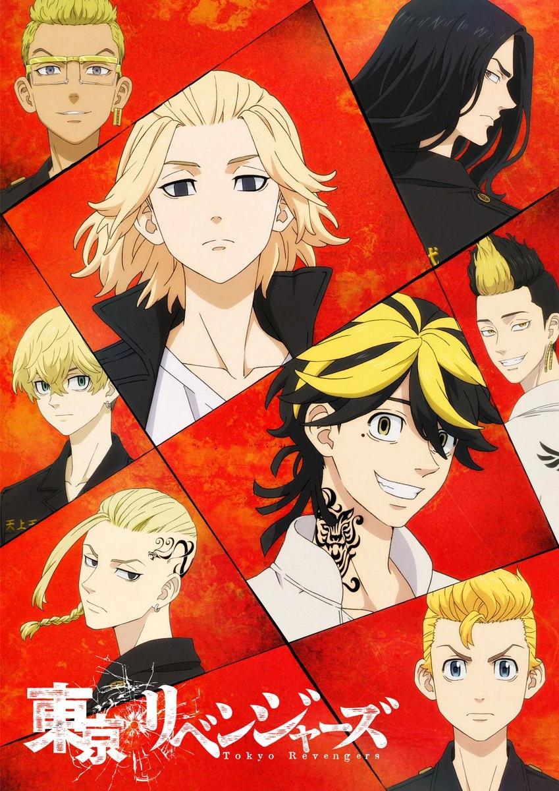

Tokyo Revengers - Ken Wakui

Overview & Recap
Tokyo Revengers is an action anime with some fantasy. the thing follows takemichi who nearly dies but thats ok. he bascially travels back and forth in time to try save his ex tachibana (they are actually really cute together like i rate). he solves gang issues and shit and yea idk how to explain it i was a bit preoccupied by mikey but we dont have to talk about that.
Review
MIKEY IS SO FUCKING ASLKDUFHALEROUGHAE I LOVE HIM SO MUCH I TOOK WAY TOO MANY SCREENSHOTS OF HIM HES SO POWERFUL AND COOL AND I LOVE HIM AND THE DUALITY OF THIS MAN HOLY CRAP so i realised im into psychos but thats ok yk OK BUT DRAKEN IS ALSO REALLY REALLY COOL AND UHH ITS LIKE GANG STUFF SO THERES LIKE A LOT OF VOILENCE AND A LOT OF PEOPLE BEAT EACH OTHER UP AND YEA ITS PRETTY GRAPHIC BUT ITS REALLY REALLY GOOD I LOVE IT.
Rating
solid 4.9/5 because i love mikey way too much and the thing is actually really good ok so the protagonist kinda pissed me off sometimes because he looks so weak and i feel like i could beat him up but his relationship with tachibana is actually really cute and wholesome and his friend group is kinda wholesome too and mikey and draken are really wholesome and I LOVE MIKEY MIKEY MY BELOVED IM GATEKEEPING HIM EVEN THOUGH GATEKEEPING IS REALLY ANNOYING IK BUT MIKEY IS ASLKUDGHALEIRUH